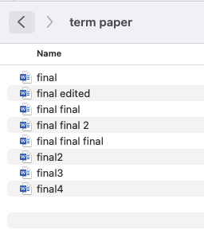

Today
- Version-control tool
- Overview of programming language and data analysis
- Some thoughts on assignment
1. Version control
- You may exerience this
- Revision and Reproducibility
- whole project / single code snippet
- you, future you, collaborators, or public
- run / study the code
- roll back to the past to compare / fix
- Need some structures
- who made the changes
- who approved the changes
- when the change were implemented
- Git: the industry leading open-source version-control tool
- infrastructure for versioning and merging files
- commandline access locally/online

- GitHub is a Graphical User Interface (GUI) for Git
- provide an online repository service like dropbox
- many useful features
- Introduction to GitHub: Link
- Some companies/users use private repository system
2. Data wrangling
- We will be back later
3. What's Programming?
- Mathematics, statitsics, data science, graphic designer,....
- Programmer, developer, software engineer
- Most of them code
Classification (lossely)
- General programming languages
- Fortran, C/C++, Java, Swift, C#, Go, JavaScript, or Python
- More mathematical / statistical programming languages
- Mathematica, MATLAB/Octave, R, or Maple
- At the end, speed
Speed again
- Quantify speed overall
- runtime speed: how fast a piece of computer code runs
- development speed: how long it takes to code, debug, improve solution
- Consider statistical computing
- Fortran, C/C++ generally fast runtime
- require more care in coding
- fast in runtime but slow in development time
- Mathematically specialized languages, Mathematica, R, MATLAB, Python
- more flexibility when creating code
- yield quicker development times
- significantly slower than a low-level language
- In fact many packages/libraries are written in low-level language
- Where is an entry hurdle?
Then, where is SQL?
- Need to think about database
- We load the data from files like spreadsheets and text files
- Some situations we need to handle
- too big data
- sharing and collaboratations
- sensitive information
- A database structures data just like a spreadsheet, by organizing data in different tables comprised of rows and columns
Communicate with a database
- A database can store (big) data much more securely than a spreadsheet or a text file
- Unlike simply opening a spreadsheet, we need to ASK for data from the database
- we write queries to extract and manage data
- Structured query language (SQL) is used for the relational database
- imagine Table
- MS SQL Server, IBM DB2, Oracle, and MySQL
- Non relational database?
- real-time web applications and big data
3. Data Analysis
$$Y=f(X)+\epsilon$$- Prepare $(X,Y)$ for analysis
- context
- Find $\hat{f}$ to make $\hat{f}(X)$ close to $Y$
- $\hat{Y} = \hat{f}(X)$
- Focus is estimating $f$ to minimize $[f(X)-\hat{f}(X)]^2$
- Causality is a somewhat different problem
- what do we assume in the equality?
4. Homework
- The question is deisgned to check your writing style/habit and general understanding of coding
- Many of you got the right answer
- Many of you got the right answers
- The right answer should depend how you approach the question
- If you don't provide this, there is only one answer
- written by me
Warning
- This review is for those who completed the assignment
- Want to discuss the content
- I have a special comment for those who did not complete it
Now what would you do?
- How to validate your answer?
- Ecuador has 0.312
- is this outlier?
- what if the numbers in South/Central America are biased?
- It only has 13 data points. Is it representative?
- More problems are in the tail
- do zeros make sense to you?
- how about Tanzania?
many people are obssessed with the methods
Alright now you
Good news is You are not alone- I want to see how you approach the data-driven exercise
- Fail to identify where/how I build the class
- I don't know what you don't know
- I understand it would be super challenging
- DataCamp does not teach you how to read csv-type files into R
- it does not teach you how to use RStudio
- Impossible?
- well, I ask you where you got stuck
- You need to identify your problems
- You don't know how to read the csv file into R?
- then, the very next step would be looking for how to do it
- have you searched it online?
- have you asked around?
- You will often face never-taught situations in the data-science world
- I want to prepare you on how to approach them
- It is a process
- It takes time
- Be honest yourself how much you spend your time
- for some 10 hours would be not enough
- I could not see your effort
- Complete it by Thursday noon
- try your very best